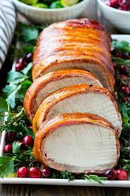

Wrapped Pork Tenderloin with Crispy Sage

Description:
Turn your weeknight dinner into a fancy affair with this easy pork tenderloin recipe.
Ingredients:
- 1 pound pork tenderloin
- salt and ground black pepper to taste
- 1 bunch fresh sage, leaves removed and stems discarded, divided
- 6 ounces prosciutto
- 1 tablespoon olive oil, or more as needed
How to prepare:
- Preheat oven to 350 degrees F (175 degrees C).
- Heat olive oil in a skillet over medium heat. Fry wrapped tenderloin in the hot oil until prosciutto is crispy and lightly browned on all sides, 8 to 10 minutes
- Bake tenderloin in the preheated oven until pork is cooked through, about 20 minutes.
- Heat reserved oil in the skillet over medium heat; fry remaining sage leaves until crispy, adding more oil as needed, about 5 minutes.
- Slice tenderloin and serve with crispy sage leaves.